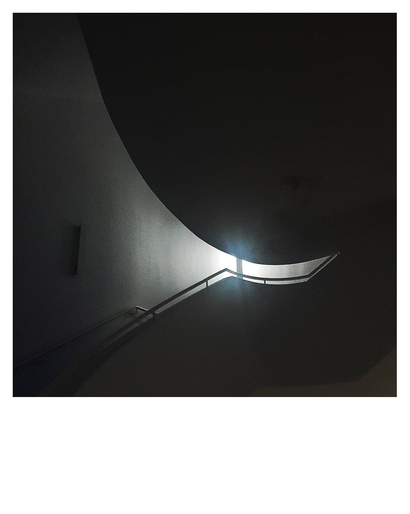

Betiko galderak; galdera garaikideak Preguntas eternas; preguntas contemporáneas
Igor Tuduri
2011-2021
Argazki-paperaren gaineko inprimaketa Impresión sobre papel fotográfico
Trentxiki E.A.-ren azken hamar urteetan mugikorraren kamerarekin egindako Instagrameko irudien bilduma da. Aldaketa teknologiko baten abantailak eta desabantailak erakusten dituzten argazkiak baino ez dira; nahiz eta eragiten dizkiguten galderak betikoak izaten jarraitzen duten.
En el transcurso de estos 10 años de Trentxiki he sido testigo del cambio que ha supuesto la experiencia de disparar con cámara de fotos a la de hacerlo con el teléfono móvil.
El cambio de salir a la calle expresamente a sacar fotos, cámara en mano, preparando encuadres y horas concretas de luz, a sacar el móvil y disparar tan rápido como la mano lo alcanza en el bolsillo de la chaqueta. Tan veloz, que casi te antepones al click del disparo. Bresson se quedó corto.... ya hemos superado el momento decisivo por instantáneo.
Curiosamente esas fotos de móvil tan rápidas son las fotos más humanas, con más vida y, como instantáneas que son, rápido se van de mi memoria. Al menos lo hace el momento vivido. La imagen, a modo recuerdo, queda colgada en una app, Instagram, como una exposición eterna.
Del mismo modo, edito las imágenes con el móvil: con mimo, pero a toda pastilla. Todo es más rápido y todo es más instintivo, igual que el instante del disparo.
El formato Polaroid está asociado al recuerdo, a la memoria. Un formato también cuadrado, como el de la mencionada app, usado antiguamente para realizar pruebas de disparo rápido para la medicion de iluminación en las sesiones. Muchas de aquellas imágenes quedaban relegadas tras la prueba al cubo de la basura.
Esos momentos fugaces que apenas recordamos, perduran apenas unos instantes en la retina, se esfuman, vuelan.... son las Polaroid de nuestra vida, colgadas de una goma que ves mientras sujetas en tu mano, pero que, al soltarlas, vuelan al igual que lo hacen de la memoria. No hay proceso y apenas hay desarrollo para efectuar la fotografía, pero son parte de nuestra esencia.
Las de la cámara sin embargo perduran... perduran en el recuerdo dada su preparación, como en la propia imagen se vislumbra. La paciencia y la inversión de nuestro tiempo tienen resultados que perduran casi eternamente en nuestra ocupada mente. Al parecer, lo instantáneo es casi efímero. O cuanto menos, borroso.
¿Es esto lo que nos toca vivir con el cambio de era tecnológica?
¿Y al disfrute?¿le ocurre lo mismo?
¿Es mejor el camino largo por las experiencias y regalos que nos da?
¿O el corto y rápido que hace llegar antes nuestras vivencias a nuestros vecinos cibernéticos?
Preguntas eternas, preguntas contemporáneas.
